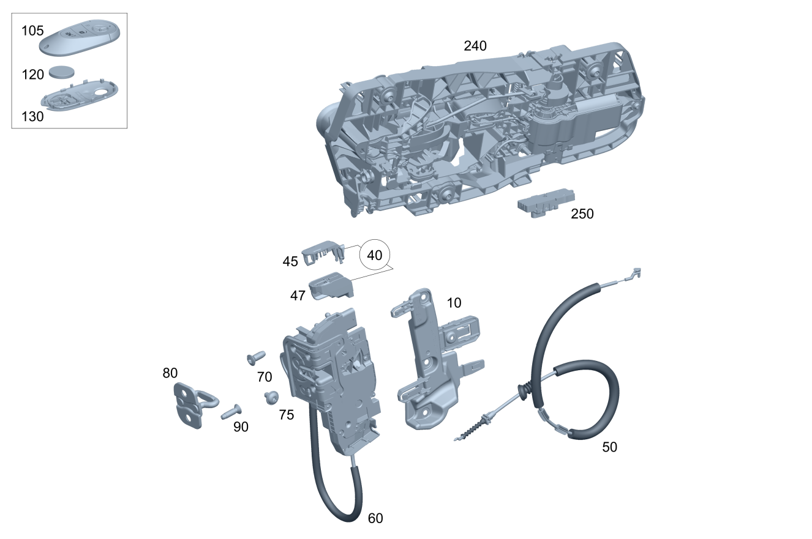

| № | Артикул | Название | Кол. | Примечание | Ограничение |
|---|---|---|---|---|---|
| 10 | A 248 723 01 00 | Держатель (HOLDER) | 1 | Держатель замка передней двери слева | |
| 10 | A 248 723 02 00 | Держатель (HOLDER) | 1 | Держатель замка передней двери справа | |
| 40 | A 206 723 19 00 | Накладка замка двери (COVER, DOOR LOCK) | 1 | Накладка замка двери Передняя дверь слева | 885 |
| 40 | A 540 723 17 00 | Накладка замка двери (COVER, DOOR LOCK) | 1 | Накладка замка двери Передняя дверь слева [402] БОЛЬШЕ НЕ ПОСТАВЛЯЕТСЯ | 885 |
| 40 | A 206 723 20 00 | Накладка замка двери (COVER, DOOR LOCK) | 1 | Накладка замка двери Передняя дверь справа | 885 |
| 40 | A 540 723 18 00 | Накладка замка двери (COVER, DOOR LOCK) | 1 | Накладка замка двери Передняя дверь справа [402] БОЛЬШЕ НЕ ПОСТАВЛЯЕТСЯ | 885 |
| 45 | A 540 723 19 00 | - Накладка замка двери (COVER, DOOR LOCK) | 1 | Крышка вверху Замок левой передней двери | 885 |
| 45 | A 540 723 20 00 | - Накладка замка двери (COVER, DOOR LOCK) | 1 | Крышка вверху Замок правой передней двери | 885 |
| 47 | A 540 723 21 00 | - Накладка замка двери (COVER, DOOR LOCK) | 1 | Крышка внизу Замок левой передней двери | 885 |
| 47 | A 540 723 22 00 | - Накладка замка двери (COVER, DOOR LOCK) | 1 | Крышка внизу Замок правой передней двери | 885 |
| 50 | A 248 760 00 00 | Трос (PULLEY) | 1 | Трос / система тяг ручки двери внутри замок передней левой двери | |
| 50 | A 248 760 00 00 | Трос (PULLEY) | 1 | Трос / система тяг ручки двери внутри замок передней правой двери | |
| 60 | A 099 720 81 02 | Замок двери (DOOR LOCK) | 1 | Замок передней двери слева | |
| 60 | A 099 720 83 02 | Замок двери | 1 | Замок передней двери слева Рулевое управление: Влево | 700 |
| 60 | A 099 720 79 02 | Замок двери (DOOR LOCK) | 1 | Замок передней двери слева Рулевое управление: Вправо | 885 |
| 60 | A 099 720 82 02 | Замок двери (DOOR LOCK) | 1 | Замок передней двери справа | |
| 60 | A 099 720 84 02 | Замок двери | 1 | Замок передней двери справа Рулевое управление: Влево | 700 |
| 60 | A 099 720 80 02 | Замок двери (DOOR LOCK) | 1 | Замок передней двери справа Рулевое управление: Вправо | 885 |
| 70 | A 000 990 89 35 | Винт Torx полупотай (CSK. PAN HEAD SCREW) | 2 | Болт замка передней левой двери; M6X15,7 | |
| 70 | A 000 990 89 35 | Винт Torx полупотай (CSK. PAN HEAD SCREW) | 2 | Болт замка передней левой двери; M6X15,7 | |
| 70 | A 000 990 89 35 | Винт Torx полупотай (CSK. PAN HEAD SCREW) | 2 | Болт замка передней левой двери; M6X15,7 | 700 |
| 70 | A 000 990 89 35 | Винт Torx полупотай (CSK. PAN HEAD SCREW) | 2 | Болт замка передней правой двери; M6X15,7 | |
| 70 | A 000 990 89 35 | Винт Torx полупотай (CSK. PAN HEAD SCREW) | 2 | Болт замка передней правой двери; M6X15,7 | |
| 70 | A 000 990 89 35 | Винт Torx полупотай (CSK. PAN HEAD SCREW) | 2 | Болт замка передней правой двери; M6X15,7 | 700 |
| 75 | A 010 990 22 04 | Винт с внутр. звездочкой (FLAT HEAD SCREW) | 1 | Болт замка передней левой двери; M6X10 | |
| 75 | A 010 990 22 04 | Винт с внутр. звездочкой (FLAT HEAD SCREW) | 1 | Болт замка передней правой двери; M6X10 | |
| 80 | A 099 723 21 00 | Скоба замка (LOCK STRIKER) | 1 | Скоба замка передней двери слева | |
| 80 | A 099 723 21 00 | Скоба замка (LOCK STRIKER) | 1 | Скоба замка передней двери справа | |
| 90 | A 000 990 97 48 | Винт Torx потайной (COUNTERSUNK SCREW) | 2 | Болт скобы замка передней двери слева | |
| 90 | A 000 990 97 48 | Винт Torx потайной (COUNTERSUNK SCREW) | 2 | Болт скобы замка передней двери справа | |
| 105 | A 174 905 78 04 | Ключ | 2 | Электронный, запрограммированный [429] ДЕТАЛЬ, СВЯЗАННАЯ С ПРОТИВОУГОННОЙ БЕЗОПАСНОСТЬЮ [-] При заказе обязательно полностью заполнить и архивировать формуляр. "Заказ заменяющего ключа / деталей системы замков": в случае возможного уголовного расследования должна быть возможность в любой момент предоставить подтверждение. [-] На а/м с FBS4 перед заказом обязательно с помощью XENTRY Diagnostics выполнить следующую команду: "Зарегистрировать а/м для заказа запрограммированного ключа" [-] Внимание ! При заказе замещающего ключа необходимо указать ES-2. Считать данные из автомобиля | 890 |
| 105 | A 174 905 90 04 | Ключ | 2 | Электронный, запрограммированный [429] ДЕТАЛЬ, СВЯЗАННАЯ С ПРОТИВОУГОННОЙ БЕЗОПАСНОСТЬЮ [-] При заказе обязательно полностью заполнить и архивировать формуляр. "Заказ заменяющего ключа / деталей системы замков": в случае возможного уголовного расследования должна быть возможность в любой момент предоставить подтверждение. [-] На а/м с FBS4 перед заказом обязательно с помощью XENTRY Diagnostics выполнить следующую команду: "Зарегистрировать а/м для заказа запрограммированного ключа" [-] Внимание ! При заказе замещающего ключа необходимо указать ES-2. Считать данные из автомобиля | 889+890 |
| 105 | A 174 905 93 04 | Ключ | 2 | Электронный, запрограммированный [429] ДЕТАЛЬ, СВЯЗАННАЯ С ПРОТИВОУГОННОЙ БЕЗОПАСНОСТЬЮ [-] При заказе обязательно полностью заполнить и архивировать формуляр. "Заказ заменяющего ключа / деталей системы замков": в случае возможного уголовного расследования должна быть возможность в любой момент предоставить подтверждение. [-] На а/м с FBS4 перед заказом обязательно с помощью XENTRY Diagnostics выполнить следующую команду: "Зарегистрировать а/м для заказа запрограммированного ключа" [-] Внимание ! При заказе замещающего ключа необходимо указать ES-2. Считать данные из автомобиля | (783+890)/(783+889+890) |
| 105 | A 174 905 96 04 | Ключ (KEY) | 2 | Электронный, запрограммированный [429] ДЕТАЛЬ, СВЯЗАННАЯ С ПРОТИВОУГОННОЙ БЕЗОПАСНОСТЬЮ [-] При заказе обязательно полностью заполнить и архивировать формуляр. "Заказ заменяющего ключа / деталей системы замков": в случае возможного уголовного расследования должна быть возможность в любой момент предоставить подтверждение. [-] На а/м с FBS4 перед заказом обязательно с помощью XENTRY Diagnostics выполнить следующую команду: "Зарегистрировать а/м для заказа запрограммированного ключа" [-] Внимание ! При заказе замещающего ключа необходимо указать ES-2. Считать данные из автомобиля | (762+890)/(762+889+890) |
| 105 | A 174 905 81 04 | Ключ | 2 | Электронный, запрограммированный [429] ДЕТАЛЬ, СВЯЗАННАЯ С ПРОТИВОУГОННОЙ БЕЗОПАСНОСТЬЮ [-] При заказе обязательно полностью заполнить и архивировать формуляр. "Заказ заменяющего ключа / деталей системы замков": в случае возможного уголовного расследования должна быть возможность в любой момент предоставить подтверждение. [-] На а/м с FBS4 перед заказом обязательно с помощью XENTRY Diagnostics выполнить следующую команду: "Зарегистрировать а/м для заказа запрограммированного ключа" [-] Внимание ! При заказе замещающего ключа необходимо указать ES-2. Считать данные из автомобиля | 889+890+7B8 |
| 105 | A 174 905 84 04 | Ключ | 2 | Электронный, запрограммированный [429] ДЕТАЛЬ, СВЯЗАННАЯ С ПРОТИВОУГОННОЙ БЕЗОПАСНОСТЬЮ [-] При заказе обязательно полностью заполнить и архивировать формуляр. "Заказ заменяющего ключа / деталей системы замков": в случае возможного уголовного расследования должна быть возможность в любой момент предоставить подтверждение. [-] На а/м с FBS4 перед заказом обязательно с помощью XENTRY Diagnostics выполнить следующую команду: "Зарегистрировать а/м для заказа запрограммированного ключа" [-] Внимание ! При заказе замещающего ключа необходимо указать ES-2. Считать данные из автомобиля | 783+889+890+7B8 |
| 105 | A 174 905 87 04 | Ключ | 2 | Электронный, запрограммированный [429] ДЕТАЛЬ, СВЯЗАННАЯ С ПРОТИВОУГОННОЙ БЕЗОПАСНОСТЬЮ [-] При заказе обязательно полностью заполнить и архивировать формуляр. "Заказ заменяющего ключа / деталей системы замков": в случае возможного уголовного расследования должна быть возможность в любой момент предоставить подтверждение. [-] На а/м с FBS4 перед заказом обязательно с помощью XENTRY Diagnostics выполнить следующую команду: "Зарегистрировать а/м для заказа запрограммированного ключа" [-] Внимание ! При заказе замещающего ключа необходимо указать ES-2. Считать данные из автомобиля | 762+889+890+7B8 |
| 105 | A 174 905 78 04 | Ключ | 2 | Электронный, незапрограммированный [429] ДЕТАЛЬ, СВЯЗАННАЯ С ПРОТИВОУГОННОЙ БЕЗОПАСНОСТЬЮ [-] При заказе обязательно полностью заполнить и архивировать формуляр. "Заказ заменяющего ключа / деталей системы замков": в случае возможного уголовного расследования должна быть возможность в любой момент предоставить подтверждение. [-] На а/м с FBS4 для программирования дополнительного или заменяющего ключа FBS4 использовать XENTRY Diagnostics, выбрав "Дополнительный ключ запрограммировать и инициализировать" или "Заменяющий ключ запрограммировать и инициализировать" | 890 |
| 105 | A 174 905 90 04 | Ключ | 2 | Электронный, незапрограммированный [429] ДЕТАЛЬ, СВЯЗАННАЯ С ПРОТИВОУГОННОЙ БЕЗОПАСНОСТЬЮ [-] При заказе обязательно полностью заполнить и архивировать формуляр. "Заказ заменяющего ключа / деталей системы замков": в случае возможного уголовного расследования должна быть возможность в любой момент предоставить подтверждение. [-] На а/м с FBS4 для программирования дополнительного или заменяющего ключа FBS4 использовать XENTRY Diagnostics, выбрав "Дополнительный ключ запрограммировать и инициализировать" или "Заменяющий ключ запрограммировать и инициализировать" | 889+890 |
| 105 | A 174 905 93 04 | Ключ | 2 | Электронный, незапрограммированный [429] ДЕТАЛЬ, СВЯЗАННАЯ С ПРОТИВОУГОННОЙ БЕЗОПАСНОСТЬЮ [-] При заказе обязательно полностью заполнить и архивировать формуляр. "Заказ заменяющего ключа / деталей системы замков": в случае возможного уголовного расследования должна быть возможность в любой момент предоставить подтверждение. [-] На а/м с FBS4 для программирования дополнительного или заменяющего ключа FBS4 использовать XENTRY Diagnostics, выбрав "Дополнительный ключ запрограммировать и инициализировать" или "Заменяющий ключ запрограммировать и инициализировать" | (783+890)/(783+889+890) |
| 105 | A 174 905 96 04 | Ключ (KEY) | 2 | Электронный, незапрограммированный [429] ДЕТАЛЬ, СВЯЗАННАЯ С ПРОТИВОУГОННОЙ БЕЗОПАСНОСТЬЮ [-] При заказе обязательно полностью заполнить и архивировать формуляр. "Заказ заменяющего ключа / деталей системы замков": в случае возможного уголовного расследования должна быть возможность в любой момент предоставить подтверждение. [-] На а/м с FBS4 для программирования дополнительного или заменяющего ключа FBS4 использовать XENTRY Diagnostics, выбрав "Дополнительный ключ запрограммировать и инициализировать" или "Заменяющий ключ запрограммировать и инициализировать" | (762+890)/(762+889+890) |
| 105 | A 174 905 81 04 | Ключ | 2 | Электронный, незапрограммированный [429] ДЕТАЛЬ, СВЯЗАННАЯ С ПРОТИВОУГОННОЙ БЕЗОПАСНОСТЬЮ [-] При заказе обязательно полностью заполнить и архивировать формуляр. "Заказ заменяющего ключа / деталей системы замков": в случае возможного уголовного расследования должна быть возможность в любой момент предоставить подтверждение. [-] На а/м с FBS4 для программирования дополнительного или заменяющего ключа FBS4 использовать XENTRY Diagnostics, выбрав "Дополнительный ключ запрограммировать и инициализировать" или "Заменяющий ключ запрограммировать и инициализировать" | 889+890+7B8 |
| 105 | A 174 905 84 04 | Ключ | 2 | Электронный, незапрограммированный [429] ДЕТАЛЬ, СВЯЗАННАЯ С ПРОТИВОУГОННОЙ БЕЗОПАСНОСТЬЮ [-] При заказе обязательно полностью заполнить и архивировать формуляр. "Заказ заменяющего ключа / деталей системы замков": в случае возможного уголовного расследования должна быть возможность в любой момент предоставить подтверждение. [-] На а/м с FBS4 для программирования дополнительного или заменяющего ключа FBS4 использовать XENTRY Diagnostics, выбрав "Дополнительный ключ запрограммировать и инициализировать" или "Заменяющий ключ запрограммировать и инициализировать" | 783+889+890+7B8 |
| 105 | A 174 905 87 04 | Ключ | 2 | Электронный, незапрограммированный [429] ДЕТАЛЬ, СВЯЗАННАЯ С ПРОТИВОУГОННОЙ БЕЗОПАСНОСТЬЮ [-] При заказе обязательно полностью заполнить и архивировать формуляр. "Заказ заменяющего ключа / деталей системы замков": в случае возможного уголовного расследования должна быть возможность в любой момент предоставить подтверждение. [-] На а/м с FBS4 для программирования дополнительного или заменяющего ключа FBS4 использовать XENTRY Diagnostics, выбрав "Дополнительный ключ запрограммировать и инициализировать" или "Заменяющий ключ запрограммировать и инициализировать" | 762+889+890+7B8 |
| 105 | A 174 905 08 05 | Ключ | 2 | Электронный, запрограммированный [429] ДЕТАЛЬ, СВЯЗАННАЯ С ПРОТИВОУГОННОЙ БЕЗОПАСНОСТЬЮ [-] При заказе обязательно полностью заполнить и архивировать формуляр. "Заказ заменяющего ключа / деталей системы замков": в случае возможного уголовного расследования должна быть возможность в любой момент предоставить подтверждение. [-] На а/м с FBS4 перед заказом обязательно с помощью XENTRY Diagnostics выполнить следующую команду: "Зарегистрировать а/м для заказа запрограммированного ключа" [-] Внимание ! При заказе замещающего ключа необходимо указать ES-2. Считать данные из автомобиля | (807/808/29X/30X)+889+7B8+956 |
| 105 | A 174 905 11 05 | Ключ | 2 | Электронный, запрограммированный [429] ДЕТАЛЬ, СВЯЗАННАЯ С ПРОТИВОУГОННОЙ БЕЗОПАСНОСТЬЮ [-] При заказе обязательно полностью заполнить и архивировать формуляр. "Заказ заменяющего ключа / деталей системы замков": в случае возможного уголовного расследования должна быть возможность в любой момент предоставить подтверждение. [-] На а/м с FBS4 перед заказом обязательно с помощью XENTRY Diagnostics выполнить следующую команду: "Зарегистрировать а/м для заказа запрограммированного ключа" [-] Внимание ! При заказе замещающего ключа необходимо указать ES-2. Считать данные из автомобиля | (807/808/29X/30X)+889+7B8+783+956 |
| 105 | A 174 905 14 05 | Ключ | 2 | Электронный, запрограммированный [429] ДЕТАЛЬ, СВЯЗАННАЯ С ПРОТИВОУГОННОЙ БЕЗОПАСНОСТЬЮ [-] При заказе обязательно полностью заполнить и архивировать формуляр. "Заказ заменяющего ключа / деталей системы замков": в случае возможного уголовного расследования должна быть возможность в любой момент предоставить подтверждение. [-] На а/м с FBS4 перед заказом обязательно с помощью XENTRY Diagnostics выполнить следующую команду: "Зарегистрировать а/м для заказа запрограммированного ключа" [-] Внимание ! При заказе замещающего ключа необходимо указать ES-2. Считать данные из автомобиля | (807/808/29X/30X)+889+7B8+762+956 |
| 105 | A 174 905 14 05 | Ключ | 2 | Электронный, запрограммированный [429] ДЕТАЛЬ, СВЯЗАННАЯ С ПРОТИВОУГОННОЙ БЕЗОПАСНОСТЬЮ [-] При заказе обязательно полностью заполнить и архивировать формуляр. "Заказ заменяющего ключа / деталей системы замков": в случае возможного уголовного расследования должна быть возможность в любой момент предоставить подтверждение. [-] На а/м с FBS4 перед заказом обязательно с помощью XENTRY Diagnostics выполнить следующую команду: "Зарегистрировать а/м для заказа запрограммированного ключа" [-] Внимание ! При заказе замещающего ключа необходимо указать ES-2. Считать данные из автомобиля | 807+889+7B8+762+956 |
| 105 | A 174 905 99 04 | Ключ с 3 кнопками | 2 | Электронный, запрограммированный [429] ДЕТАЛЬ, СВЯЗАННАЯ С ПРОТИВОУГОННОЙ БЕЗОПАСНОСТЬЮ [-] При заказе обязательно полностью заполнить и архивировать формуляр. "Заказ заменяющего ключа / деталей системы замков": в случае возможного уголовного расследования должна быть возможность в любой момент предоставить подтверждение. [-] На а/м с FBS4 перед заказом обязательно с помощью XENTRY Diagnostics выполнить следующую команду: "Зарегистрировать а/м для заказа запрограммированного ключа" [-] Внимание ! При заказе замещающего ключа необходимо указать ES-2. Считать данные из автомобиля | 956 |
| 105 | A 174 905 02 05 | Ключ с 3 кнопками (KEY WITH 3 BUTTONS) | 2 | Электронный, запрограммированный [429] ДЕТАЛЬ, СВЯЗАННАЯ С ПРОТИВОУГОННОЙ БЕЗОПАСНОСТЬЮ [-] При заказе обязательно полностью заполнить и архивировать формуляр. "Заказ заменяющего ключа / деталей системы замков": в случае возможного уголовного расследования должна быть возможность в любой момент предоставить подтверждение. [-] На а/м с FBS4 перед заказом обязательно с помощью XENTRY Diagnostics выполнить следующую команду: "Зарегистрировать а/м для заказа запрограммированного ключа" [-] Внимание ! При заказе замещающего ключа необходимо указать ES-2. Считать данные из автомобиля | 783+956 |
| 105 | A 174 905 05 05 | Ключ с 3 кнопками (KEY WITH 3 BUTTONS) | 2 | Электронный, запрограммированный [429] ДЕТАЛЬ, СВЯЗАННАЯ С ПРОТИВОУГОННОЙ БЕЗОПАСНОСТЬЮ [-] При заказе обязательно полностью заполнить и архивировать формуляр. "Заказ заменяющего ключа / деталей системы замков": в случае возможного уголовного расследования должна быть возможность в любой момент предоставить подтверждение. [-] На а/м с FBS4 перед заказом обязательно с помощью XENTRY Diagnostics выполнить следующую команду: "Зарегистрировать а/м для заказа запрограммированного ключа" [-] Внимание ! При заказе замещающего ключа необходимо указать ES-2. Считать данные из автомобиля | 762+956 |
| 105 | A 174 905 08 05 | Ключ | 2 | Электронный, незапрограммированный [429] ДЕТАЛЬ, СВЯЗАННАЯ С ПРОТИВОУГОННОЙ БЕЗОПАСНОСТЬЮ [-] При заказе обязательно полностью заполнить и архивировать формуляр. "Заказ заменяющего ключа / деталей системы замков": в случае возможного уголовного расследования должна быть возможность в любой момент предоставить подтверждение. [-] На а/м с FBS4 для программирования дополнительного или заменяющего ключа FBS4 использовать XENTRY Diagnostics, выбрав "Дополнительный ключ запрограммировать и инициализировать" или "Заменяющий ключ запрограммировать и инициализировать" | (807/808/29X/30X)+889+7B8+956 |
| 105 | A 174 905 11 05 | Ключ | 2 | Электронный, незапрограммированный [429] ДЕТАЛЬ, СВЯЗАННАЯ С ПРОТИВОУГОННОЙ БЕЗОПАСНОСТЬЮ [-] При заказе обязательно полностью заполнить и архивировать формуляр. "Заказ заменяющего ключа / деталей системы замков": в случае возможного уголовного расследования должна быть возможность в любой момент предоставить подтверждение. [-] На а/м с FBS4 для программирования дополнительного или заменяющего ключа FBS4 использовать XENTRY Diagnostics, выбрав "Дополнительный ключ запрограммировать и инициализировать" или "Заменяющий ключ запрограммировать и инициализировать" | (807/808/29X/30X)+889+7B8+783+956 |
| 105 | A 174 905 14 05 | Ключ | 2 | Электронный, незапрограммированный [429] ДЕТАЛЬ, СВЯЗАННАЯ С ПРОТИВОУГОННОЙ БЕЗОПАСНОСТЬЮ [-] При заказе обязательно полностью заполнить и архивировать формуляр. "Заказ заменяющего ключа / деталей системы замков": в случае возможного уголовного расследования должна быть возможность в любой момент предоставить подтверждение. [-] На а/м с FBS4 для программирования дополнительного или заменяющего ключа FBS4 использовать XENTRY Diagnostics, выбрав "Дополнительный ключ запрограммировать и инициализировать" или "Заменяющий ключ запрограммировать и инициализировать" | (807/808/29X/30X)+889+7B8+762+956 |
| 105 | A 174 905 14 05 | Ключ | 2 | Электронный, незапрограммированный [429] ДЕТАЛЬ, СВЯЗАННАЯ С ПРОТИВОУГОННОЙ БЕЗОПАСНОСТЬЮ [-] При заказе обязательно полностью заполнить и архивировать формуляр. "Заказ заменяющего ключа / деталей системы замков": в случае возможного уголовного расследования должна быть возможность в любой момент предоставить подтверждение. [-] На а/м с FBS4 для программирования дополнительного или заменяющего ключа FBS4 использовать XENTRY Diagnostics, выбрав "Дополнительный ключ запрограммировать и инициализировать" или "Заменяющий ключ запрограммировать и инициализировать" | 807+889+7B8+762+956 |
| 105 | A 174 905 99 04 | Ключ с 3 кнопками | 2 | Электронный, незапрограммированный [429] ДЕТАЛЬ, СВЯЗАННАЯ С ПРОТИВОУГОННОЙ БЕЗОПАСНОСТЬЮ [-] При заказе обязательно полностью заполнить и архивировать формуляр. "Заказ заменяющего ключа / деталей системы замков": в случае возможного уголовного расследования должна быть возможность в любой момент предоставить подтверждение. [-] На а/м с FBS4 для программирования дополнительного или заменяющего ключа FBS4 использовать XENTRY Diagnostics, выбрав "Дополнительный ключ запрограммировать и инициализировать" или "Заменяющий ключ запрограммировать и инициализировать" | 956 |
| 105 | A 174 905 02 05 | Ключ с 3 кнопками (KEY WITH 3 BUTTONS) | 2 | Электронный, незапрограммированный [429] ДЕТАЛЬ, СВЯЗАННАЯ С ПРОТИВОУГОННОЙ БЕЗОПАСНОСТЬЮ [-] При заказе обязательно полностью заполнить и архивировать формуляр. "Заказ заменяющего ключа / деталей системы замков": в случае возможного уголовного расследования должна быть возможность в любой момент предоставить подтверждение. [-] На а/м с FBS4 для программирования дополнительного или заменяющего ключа FBS4 использовать XENTRY Diagnostics, выбрав "Дополнительный ключ запрограммировать и инициализировать" или "Заменяющий ключ запрограммировать и инициализировать" | 783+956 |
| 105 | A 174 905 05 05 | Ключ с 3 кнопками (KEY WITH 3 BUTTONS) | 2 | Электронный, незапрограммированный [429] ДЕТАЛЬ, СВЯЗАННАЯ С ПРОТИВОУГОННОЙ БЕЗОПАСНОСТЬЮ [-] При заказе обязательно полностью заполнить и архивировать формуляр. "Заказ заменяющего ключа / деталей системы замков": в случае возможного уголовного расследования должна быть возможность в любой момент предоставить подтверждение. [-] На а/м с FBS4 для программирования дополнительного или заменяющего ключа FBS4 использовать XENTRY Diagnostics, выбрав "Дополнительный ключ запрограммировать и инициализировать" или "Заменяющий ключ запрограммировать и инициализировать" | 762+956 |
| 120 | N 000000 002008 | - Аккумуляторная батарея (BATTERY) | 2 | АКБ Ключ с передатчиком Дистанционное инфракрасное/радиоуправление | |
| 130 | A 174 766 02 00 | - Кришка корпуса ключа (KEY HOUSING COVER) | 2 | Крышка корпуса Ключ с передатчиком Дистанционное инфракрасное радиоуправление [429] ДЕТАЛЬ, СВЯЗАННАЯ С ПРОТИВОУГОННОЙ БЕЗОПАСНОСТЬЮ | |
| 130 | A 174 766 05 00 | - Кришка корпуса ключа (KEY HOUSING COVER) | 2 | Крышка корпуса Ключ с передатчиком Дистанционное инфракрасное радиоуправление [429] ДЕТАЛЬ, СВЯЗАННАЯ С ПРОТИВОУГОННОЙ БЕЗОПАСНОСТЬЮ | 783+889 |
| 130 | A 174 766 01 00 | - Кришка корпуса ключа (KEY HOUSING COVER) | 2 | Крышка корпуса Ключ с передатчиком Дистанционное инфракрасное радиоуправление [429] ДЕТАЛЬ, СВЯЗАННАЯ С ПРОТИВОУГОННОЙ БЕЗОПАСНОСТЬЮ | (807/808/29X/30X)+956 |
| 130 | A 174 766 04 00 | - Кришка корпуса ключа | 2 | Крышка корпуса Ключ с передатчиком Дистанционное инфракрасное радиоуправление [429] ДЕТАЛЬ, СВЯЗАННАЯ С ПРОТИВОУГОННОЙ БЕЗОПАСНОСТЬЮ | (807/808/29X/30X)+783+956 |
| 240 | A 099 760 77 06 | Ручка двери | 1 | Ручка левой передней двери [420] ПЕРЕД УСТАНОВКОЙ НЕОБХОДИМО ОКРАСИТЬ | |
| 240 | A 099 760 35 08 | Ручка двери (DOOR HANDLE) | 1 | Ручка левой передней двери Рулевое управление: Влево [420] ПЕРЕД УСТАНОВКОЙ НЕОБХОДИМО ОКРАСИТЬ | 889 |
| 240 | A 099 760 37 08 | Ручка двери | 1 | Ручка левой передней двери Рулевое управление: Вправо | 889 |
| 240 | A 099 760 39 08 | Ручка двери | 1 | Ручка левой передней двери Рулевое управление: Влево | 889+(P55/P60)+(807+057/808/29X) |
| 240 | A 099 760 39 08 | Ручка двери | 1 | Ручка левой передней двери Рулевое управление: Влево | 889+(P55/P60) |
| 240 | A 099 760 41 08 | Ручка двери | 1 | Ручка левой передней двери Рулевое управление: Вправо | 889+(P55/P60)+(807+057/808/29X) |
| 240 | A 099 760 41 08 | Ручка двери | 1 | Ручка левой передней двери Рулевое управление: Вправо | 889+(P55/P60) |
| 240 | A 099 760 78 06 | Ручка двери | 1 | Ручка правой передней двери [420] ПЕРЕД УСТАНОВКОЙ НЕОБХОДИМО ОКРАСИТЬ | |
| 240 | A 099 760 36 08 | Ручка двери (DOOR HANDLE) | 1 | Ручка правой передней двери Рулевое управление: Влево | 889 |
| 240 | A 099 760 38 08 | Ручка двери | 1 | Ручка правой передней двери Рулевое управление: Вправо | 889 |
| 240 | A 099 760 40 08 | Ручка двери | 1 | Ручка правой передней двери Рулевое управление: Влево | 889+(P55/P60)+(807+057/808/29X) |
| 240 | A 099 760 40 08 | Ручка двери | 1 | Ручка правой передней двери Рулевое управление: Влево | 889+(P55/P60) |
| 240 | A 099 760 42 08 | Ручка двери | 1 | Ручка правой передней двери Рулевое управление: Вправо | 889+(P55/P60)+(807+057/808/29X) |
| 240 | A 099 760 42 08 | Ручка двери | 1 | Ручка правой передней двери Рулевое управление: Вправо | 889+(P55/P60) |
| 250 | A 174 901 20 11 | - Блок управл. (CONTROL UNIT) | 1 | Блок управления Ручка двери Передняя правая дверь Рулевое управление: Влево [400] НЕ ЯВЛЯЕТСЯ ЗАПАСНОЙ ЧАСТЬЮ, ДЕТАЛЬ ТРЕБУЕТСЯ ТОЛЬКО ДЛЯ ПРОЦЕССА ПЕРЕПРОГРАММИРОВАНИЯ! [402] БОЛЬШЕ НЕ ПОСТАВЛЯЕТСЯ | 889 |
| 250 | A 174 901 20 11 | - Блок управл. (CONTROL UNIT) | 1 | Блок управления Ручка двери Передняя правая дверь Рулевое управление: Вправо [400] НЕ ЯВЛЯЕТСЯ ЗАПАСНОЙ ЧАСТЬЮ, ДЕТАЛЬ ТРЕБУЕТСЯ ТОЛЬКО ДЛЯ ПРОЦЕССА ПЕРЕПРОГРАММИРОВАНИЯ! [402] БОЛЬШЕ НЕ ПОСТАВЛЯЕТСЯ | 889 |
Позиций: 79 · подписано на схемах: 79 · колесо — плавный зум в курсор, перетаскивание — пан, двойной клик — зум, клик по артикулу — скопировать.